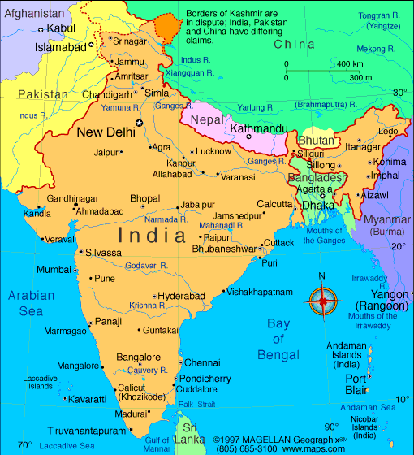

India
A colourful and diverse country, where the past and present tie into the everyday life.

A colourful and diverse country, where the past and present tie into the everyday life.
In India, people commonly greet each other by pressing their palms together at chest level and slightly bowing the head – this is "Namaste." It's not just a polite gesture, but also a sign of respect and spiritual connection with another person. If you want to make a good impression on locals – try saying "Namaste" yourself!

Many Indian families live in large households where several generations share the same roof. Grandparents, uncles, aunts, cousins – all share the joys and challenges of life together. While it might mean less privacy, it brings more love, support, and endless family stories!
Cows are considered sacred in India and hold a special place in the culture. They roam freely even in big cities, and if one blocks your way – you’ll just have to wait patiently. They are respected both for religious reasons and their usefulness – their milk, butter, and other products are used for food and rituals.
In markets and small shops, nobody pays the first price offered. Bargaining in India is a true art, and those who know how to cleverly lower the price are respected. So if you want to buy a souvenir or a colorful sari – get ready for a fun bargaining battle!

Traditionally in India, handshakes are only exchanged between men. Women usually greet others with "Namaste," especially if they don’t know the person very well. So, if you want to show respect, it's better to press your palms together and nod!
Respecting elders is very important in India. Younger people often bow their heads or even touch the feet of older people as a sign of respect. The oldest family members usually make the decisions, and their advice is considered invaluable. So if an elderly person in India gives you advice – it’s worth listening to!
People in India are used to small distances – whether in streets, buses, or queues at kiosks. If you feel someone is standing too close in India – don’t worry, it’s totally normal. Here, togetherness matters more than personal space!


Republic Day is celebrated on January 26th, marking the adoption of the Indian Constitution with military parades and official ceremonies.

Independence Day is celebrated on August 15th, commemorating India’s independence from British rule with flag hoisting and cultural events.
Gandhi Jayanti is celebrated on October 2nd, marking the birth of Mahatma Gandhi, honored with moments of silence and tributes.

Diwali, celebrated in October–November (depending on the lunar calendar), is the festival of lights symbolizing the victory of good over evil, marked by fireworks, lanterns, and family gatherings.
Here’s some often used phrases in India! These phrases will help you not to get lost during conversations. However, use them with cautions, because if you get carried away, it can come across as rude.
Meaning: to do sth. necessary.
Usage: "Do the needful and send the report."
This phrase is very common in India and South Asia, especially in formal emails or business contexts.
A tip! In Western cultures, this phrase may sound odd or outdated. Better alternatives include "Please take care of it" or "Please handle it."
Meaning: intensive, vigorous learning.
Usage: "I can't go, I'm mugging for my exam."
In India, "mugging" means rote learning, often without deep understanding. Elsewhere, it means "being robbed violently"!
A tip! Say "studying hard" or "cramming" in international settings to avoid confusion.
Meaning: to bother, irritate by one's constant presence.
Usage: "Stop sitting on my head, I'll finish soon!"
This metaphorical expression in India refers to excessive interference in someone’s activities.
A tip! English speakers may not get it literally—try "Stop pestering me" or "Stop hovering over me."
Meaning: to irritate by one's constant talking, asks.
Usage: "He keeps eating my brain today!"
This is commonly used among friends or family when someone becomes too annoying.
A tip! Westerners might not get this. Say "Stop annoying me" or "You're driving me crazy" instead.
Meaning: an activity just for passing the time.
Usage: "Watching TV is just a timepass for me."
This expression can be used both seriously and playfully, depending on the tone.
A tip! Instead, say "killing time" or "just passing the time."
Meaning: out of town, place of residence.
Usage: "I can't meet you today, I'm out of station."
This phrase dates back to colonial British English but is now mostly used in India.
A tip! Say "I'm out of town" or "I'm traveling" elsewhere.
Meaning: to bring the meeting forward.
Usage: "The meeting is preponed to 10 AM."
Though logically the opposite of "postpone," this word is rarely used outside India.
A tip! Try "reschedule to an earlier time" or "move up the meeting."
Meaning: to finish school, university.
Usage: "I passed out from college last year."
In India, this means finishing school, but elsewhere it means fainting or losing consciousness.
A tip! Use "graduate" instead of "pass out" internationally.
Meaning: to reply to a message or email.
Usage: "Please revert at your earliest convenience."
In English-speaking countries, "revert" means to return to a previous state, so this usage may confuse people.
A tip! Use "reply" or "get back to me" instead.


Here’s some things you should never do, if you want to blend in and avoid uncomfortable situations. Follow these tips to make a great impression!
| Don't: | Why? | What to do instead: | |
|---|---|---|---|
| Showing Affection in Public | Public kissing or hugging is often considered inappropriate, especially in conservative areas. | Keep displays of affection private. | |
| Entering Indoors With Shoes On | Shoes are considered dirty and should not be worn inside homes or temples. | Take off your shoes before entering indoor spaces. | |
| Showing Shoulders or Knees in Temples | Modest clothing shows respect for religion and sacred places. | Wear long clothes that cover your shoulders and knees. | |
| Addressing Elders by Name | Elders are shown respect through formal address or family titles. | Use “uncle,” “auntie,” or formal titles. | |
| Wearing Leather in Temples | Cows are considered sacred, so leather can be offensive in religious settings. | Avoid leather items when visiting religious places. |  |
| Eating or Handing Items with Your Left Hand | The left hand is considered unclean due to hygiene customs. | Eat and pass items with your right hand. |  |
| Saying “Please” Too Often | Using “please” excessively may sound unnatural or overly formal. | Be polite, but warm and sincere. |  |
| Directly Refusing an Invitation | A blunt “no” can come across as rude or offensive. | Decline gently: “maybe next time,” “thank you very much, but not this time.” |  |
| Judging the Whole Country by One Experience | India is incredibly diverse – one experience doesn’t reflect the entire country. | Be open to different cultures and regions. |  |